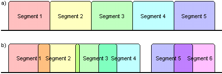
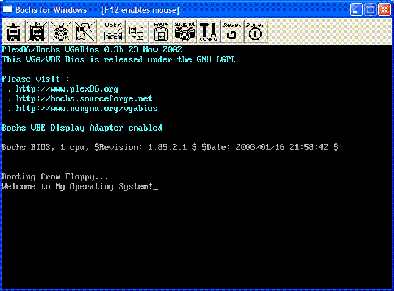

Bootloaders 2
In this page, we will expand on our bootloader. We will cover:
- BIOS Parameter Block and the MBR
- Processor Modes
- Interrupts - Printing text and more
Segment:offsetAddressing Mode
Note
From here on out, our bootloader has full control of the entire system. What this means, is simply that everything relies on us writing the code. Everything now is up to us! In short: There will be a lot more code coming up.
Ready?
Processor Modes
Well, well...Where have we heard this term before? Lets see... In every single tutorial!
And yet, we have not really talked much about it. Understanding the different processor modes will be very important to us. Why is this?
In the previous 2 tutorials, we talked about how and why the x86 family boots up in a 16 bit environment. We want to develop a 32 bit operating system (OS), so we will need to switch the processor from its 16 bit mode into a 32 bit mode.
There are more then two modes. Lets go over each one, shall we?
Real Mode
As you know, the x86 processor boots into a 16 bit environment. What is this mode? (Hint: Its not Real Mode) ... Okay, it is :)
What is so real abut real mode, anyway? Real Mode...
- Uses the native segment:offset memory model.
- Is limited to 1 MB (+64k) of memory.
- No Virtual Memory or Memory Protection.
Some of these are fairly easy. Others require some explanation though. One thing to note is that, all of the above indirectly or directly relates to memory.
Lets take a closer look, shall we?
Segment:offset Memory Mode - History
Lets go Back In Time(tm) again, and look at Tutorial 2. The concept of Memory and use of Operating Systems dated back since the 1950s. These computers were not personal computers, but instead large mainframe computers.
Remember that, back then, all computers had very large and bulky hardware devices. Through time (Looking back at Tutorial 2), you can see not only advances in Operating Systems, but computers as well.
As computer popularity gained, so did its demand. When computers were 8 bit, many wanted 16. When the 16 bit era came, Microsoft was already thinking 32 bit. As soon as the 32 bit area came, 64 bit was already mainstream. Okay, the last one isn't true :) but, 128 bit is on its way.
The primary problem is the computer industry moves to fast.
When Intel was designing the 8086 Processor, the processor used 16 bit registers, and could only access up to 64 KB of memory. The problem, however, was that a lot of software required more memory then this.
The 8086 was being designed the same time the 8088 was. The 8088, however, was going to be Intel's "next generation" processor, except it was taking longer then expected. To challenge the other companies, Intel quickly wanted to develop and release a processor, the 8086, to hold off until the 8088 was released.
The problem here is that, software demanded more memory then 64 KB, and Intel's processor, the 8086, was to challenge their competitors who is already building 16 bit processors, until the 8088 was released. Intel needed a strategy.
The designers of the 8086 proposed a solution. This solution will allow the 8086 to stay 16 bit, while being able to access up to 1 MB of memory. They agreed, and Intel approved.
The segment:offset memory scheme was born.
To understand the segment:offset scheme, lets break it down and look at segments and offsets first.
Segments
A Segment is simply a part of a whole. In our case, A segment is a section of memory. Yep--That's basically all it is.
Imagine dividing memory into sections. These sections represent segments.
The x86 Family of processors uses 4 primary registers that store the beginning location of a segment. Its like a base address--It provides the start of a segment.
Normally, a segment may be 64 KB in size, and are freely movable.
Remember that segments simply represents a section in memory. In this case, if the segment base address is 0, then this represents the segment between byte 0 and 64 KB.
The registers are CS, DS, ES, and SS. These registers store the base address for the segments. We will take a closer look at them after we look at addressing with this mode.
Offsets
An offset is a number that is added to a base number. For example, if the base number is 3:
Offset = base number (3) + the offset number
Offset 2 is 3+2 = 5
Offset 4 is 3+4 = 7
Okay, so how does this relate to us? Well, in segment:offset addressing, we add the Base Address (Remember that a segment represents a base address) with the offset address!
Pretty simple, huh? Now, lets put it all together.
Segment:offset Addressing
In Segment:offset Addressing, we simply add the offset address with the segment address. However, in the previous section, I mentioned that each segment address in Real Mode is 16 bits in size. This means we also have to multiply our segment by 16(decimal), and then we add the offset. So, here's our current formula:
Absolute (Exact) Memory Address = (Segment Address * 16(decimal)) + Offset
That's all there is to it 😁
Segment:offset Conventions
Segment and offset addresses are usually separated by a colon (:). They are usually of the form Segment : Offset. For example:
07C0:0000 < 07C0 is the segment, and 0 is the offset
We can convert the above to the absolute address 0x7C00 by using our formula:
base address = base address * segment size (16) + offset
07C0:0000 = 07C0 * 16 (decimal) + 0
= 07C00 + 0 = 0x7C00
Segment:offset Problems
Segment:offset is quite unique. By changing the segment and offset values, you can find different segment:offset pairs will yield the same absolute address. Why? Because they both refer to the same memory location!
For example, all of the below addresses refer to our bootloader at 0x7C00:
0007:7B90 0008:7B80 0009:7B70 000A:7B60 000B:7B50 000C:7B40
0047:7790 0048:7780 0049:7770 004A:7760 004B:7750 004C:7740
0077:7490 0078:7480 0079:7470 007A:7460 007B:7450 007C:7440
01FF:5C10 0200:5C00 0201:5BF0 0202:5BE0 0203:5BD0 0204:5BC0
07BB:0050 07BC:0040 07BD:0030 07BE:0020 07BF:0010 07C0:0000
These are only a few. Technically, there is exactly 4,096 different combinations of segment:offset that can refer to the same byte in memory -- This is for each byte in memory!
What if we have two segment addresses that are within 64 KB? Remember that the size of a segment (and offset) are 16 bits. And the segment addresses refer only to the base of a segment. This is what an Overlapped Segment is:

Imagine layers on top of layers that lay over other segments. This could cause problems.
This means, in Real Mode, you can access every byte in memory, over 4,000 different ways, being able to overlap segments that could potentially corrupt that area of memory without you knowing. This is what is meant by Real Mode not having any Memory Protection.
The registers the x86 use for segment referencing are as follows:
- CS (Code Segment) - Stores base segment address for code
- DS (Data Segment) - Stores base segment address for data
- ES (Extra Segment) - Stores base segment address for anything
- SS (Stack Segment) - Stores base segment address for the stack
Wow, Real Mode has a lot of problems. What will protect little old us from it?
Protected Mode
Protected Mode (PMode) is a term you heard a lot, and will here a lot more. PMode allows Memory Protection through the use of a Descriptor Tables that describe your memory layout.
PMode is a 32 bit processor modes, so it also allows you to use 32 bit registers, and access up to 4 GB of RAM. A huge improvement over Real Mode.
We will be using PMode. And yes, before you ask, Windows is a PMode OS. :)
PMode is a bit tricky to set up and to fully understand how it works. We will discuss more about PMode later.
Unreal Mode
It is possible to switch from processor modes whenever you want. The term "Unreal Mode" is a pun that represents Real Mode with the address space (4 GB limit) of PMode.
To enable Unreal Mode, simply switch the processor from Real Mode into PMode, and back again after loading a new Descriptor.
Descriptor Tables can be quite confusing. I will talk about them in detail when we talk more about Protected Mode (PMode).
Virtual 8086 Mode
Virtual 8086 Mode (v86 Mode) is a Mode that represents Protected Mode with a 16 bit Real Mode emulated environment.
This might seem kind of strange, don't you think? v86 can be useful, however. All BIOS interrupts are only available in real mode! v86 Mode provides a way of executing BIOS interrupts from within PMode. More on this later.
Switching processor modes
We wont cover the code to switch processor modes just yet. Instead, I want to take a step back and explain some important concepts.
The only two built in actual modes are Real Mode and Protected Mode. In other words, the other modes, Unreal Mode and v86 Mode, are built from these two modes.
Remember that Unreal Mode is in Real Mode, but uses the Protected Mode (PMode) Addressing system. And, Virtual 8086 Mode is in PMode, but uses Real Mode to execute 16 bit code.
As you can see, both v86 and Unreal mode are simply based off of Real Mode and Protected Modes. Because of this, it might be hard to understand how these modes work without an understanding of PMode.
We will take a closer look at PMode, Unreal Mode, and v86 Mode soon, so don't worry :)
There is some important things to remember about PMode however:
- Absolutely no interrupts will be available. You will need to write them yourself. The use of any interrupt--hardware or software will cause a Triple Fault
- Once you switch into PMode, the slightest mistake will cause a Triple Fault. Be careful.
- PMode requires the use of Descriptor Tables, such as the GDT, LDT, and IDTs.
- PMode gives you access to 4 GB of Memory, With Memory Protection
- Segment:offset Addressing is used along with Linear Addressing
- Access and use of 32 bit registers
We will cover PMode in a lot more detail later.
Expanding the bootloader
Wow, we went over a lot so far, didn't we? We went over basic theory of Protected Mode, Unreal Mode, and v86 Mode. We covered Real Mode in depth though. Why? Because, remember that the computer boots in a 16 bit environment for backward compatibility with DOS. This 16 bit environment is Real Mode.
So, yes-When our bootloader is executed, we are in Real Mode. Wait! This means we can use BIOS Interrupts, right? Yep :) This includes VGA Video interrupts, and any other interrupt mapped directly from hardware :)
Useful Routines and BIOS Interrupts
OEM Parameter Block
The OEM Parameter Block stores the Windows MBR and Boot Record information. Its primary purpose is to describe the filesystem on the disk. We will not describe this table until we look at filesystems. However, we can go no further without it.
This will also fix the "Not formatted" message from Windows.
For now, think of this table as a simple necessity. I will explain it in detail later when we talk about File Systems, and loading Files off disk.
Here is the bootloader with the table:
;*********************************************
; Boot1.asm
; - A Simple Bootloader
;
; Operating Systems Development Tutorial
;*********************************************
bits 16 ; We are still in 16 bit Real Mode
org 0x7c00 ; We are loaded by BIOS at 0x7C00
start: jmp loader ; jump over OEM block
;*************************************************;
; OEM Parameter block
;*************************************************;
TIMES 0Bh-$+start DB 0
bpbBytesPerSector: DW 512
bpbSectorsPerCluster: DB 1
bpbReservedSectors: DW 1
bpbNumberOfFATs: DB 2
bpbRootEntries: DW 224
bpbTotalSectors: DW 2880
bpbMedia: DB 0xF0
bpbSectorsPerFAT: DW 9
bpbSectorsPerTrack: DW 18
bpbHeadsPerCylinder: DW 2
bpbHiddenSectors: DD 0
bpbTotalSectorsBig: DD 0
bsDriveNumber: DB 0
bsUnused: DB 0
bsExtBootSignature: DB 0x29
bsSerialNumber: DD 0xa0a1a2a3
bsVolumeLabel: DB "MOS FLOPPY "
bsFileSystem: DB "FAT12 "
;*************************************************;
; Bootloader Entry Point
;*************************************************;
loader:
cli ; Clear all Interrupts
hlt ; halt the system
times 510 - ($-$) db 0 ; We have to be 512 bytes. Clear the rest of the bytes with 0
dw 0xAA55 ; Boot Signature
Printing Text - Interrupt 0x10 Function 0x0E
You an use INT 0x10 for video interrupts. Remember, however, that only basic interrupts will work.
INT 0x10 - VIDEO TELETYPE OUTPUT
AH = 0x0E
AL = Character to write
BH - Page Number (Should be 0)
BL = Foreground color (Graphics Modes Only)
For example:
xor bx, bx ; A faster method of clearing BX to 0
mov ah, 0x0e
mov al, 'A'
int 0x10
This will print the character 'A' on the screen.
Printing Strings - Interrupt 0x10 Function 0x0E
Using the same interrupt, we can easily print out a 0 terminated string:
msg db "Welcome to My Operating System!", 0
;***************************************
; Prints a string
; DS=>SI: 0 terminated string
;***************************************
Print:
lodsb
or al, al ; al=current character
jz PrintDone ; null terminator found
mov ah, 0eh ; get next character
int 10h
jmp Print
PrintDone:
ret
;*************************************************;
; Bootloader Entry Point
;*************************************************;
loader:
; Error Fix 1 ------------------------------------------
xor ax, ax ; Setup segments to insure they are 0\. Remember that
mov ds, ax ; we have ORG 0x7c00\. This means all addresses are based
mov es, ax ; from 0x7c00:0\. Because the data segments are within the same
; code segment, null em.
mov si, msg
call Print
cli ; Clear all Interrupts
hlt ; halt the system
times 510 - ($-$) db 0 ; We have to be 512 bytes. Clear the rest of the bytes with 0
dw 0xAA55 ; Boot Signature
Getting amount of RAM
This is too easy:
INT 0x12 - BIOS GET MEMORY SIZE
Returns: AX = Kilobytes of contiguous memory starting from absolute address 0x0.
Here's an example:
xor ax, ax
int 0x12 ; Now AX = Amount of KB in system recorded by BIOS
Wow... That was hard, wasn't it? 😁 Actually, it can be very hard to do in Protected Mode (PMode) as you will not have any interrupts available.
Note
The amount of memory actually returned from the BIOS might not be accurate! We will look at some other methods later.
Demo

;*********************************************
; Boot1.asm
; - A Simple Bootloader
;
; Operating Systems Development Tutorial
;*********************************************
bits 16 ; We are still in 16 bit Real Mode
org 0x7c00 ; We are loaded by BIOS at 0x7C00
start: jmp loader ; jump over OEM block
;*************************************************;
; OEM Parameter block
;*************************************************;
TIMES 0Bh-$+start DB 0
bpbBytesPerSector: DW 512
bpbSectorsPerCluster: DB 1
bpbReservedSectors: DW 1
bpbNumberOfFATs: DB 2
bpbRootEntries: DW 224
bpbTotalSectors: DW 2880
bpbMedia: DB 0xF0
bpbSectorsPerFAT: DW 9
bpbSectorsPerTrack: DW 18
bpbHeadsPerCylinder: DW 2
bpbHiddenSectors: DD 0
bpbTotalSectorsBig: DD 0
bsDriveNumber: DB 0
bsUnused: DB 0
bsExtBootSignature: DB 0x29
bsSerialNumber: DD 0xa0a1a2a3
bsVolumeLabel: DB "MOS FLOPPY "
bsFileSystem: DB "FAT12 "
;*************************************************;
; Bootloader Entry Point
;*************************************************;
loader:
cli ; Clear all Interrupts
hlt ; halt the system
times 510 - ($-$) db 0 ; We have to be 512 bytes. Clear the rest of the bytes with 0
dw 0xAA55 ; Boot Signature
msg db "Welcome to My Operating System!", 0
;***************************************
; Prints a string
; DS=>SI: 0 terminated string
;***************************************
Print:
lodsb
or al, al ; al=current character
jz PrintDone ; null terminator found
mov ah, 0eh ; get next character
int 10h
jmp Print
PrintDone:
ret
;*************************************************;
; Bootloader Entry Point
;*************************************************;
loader:
; Error Fix 1 ------------------------------------------
xor ax, ax ; Setup segments to insure they are 0\. Remember that
mov ds, ax ; we have ORG 0x7c00\. This means all addresses are based
mov es, ax ; from 0x7c00:0\. Because the data segments are within the same
; code segment, null em.
mov si, msg
call Print
cli ; Clear all Interrupts
hlt ; halt the system
times 510 - ($-$) db 0 ; We have to be 512 bytes. Clear the rest of the bytes with 0
dw 0xAA55 ; Boot Signature
Conclusion
Give yourself a pat on the back for making this far. 😁
This tutorial was a nasty one. I had to find a very good way of explaining segment:offset addressing and the processor modes without going into to much depth. I think I did well 😁
We talked about the different processor modes--Real Mode, Protected Mode, Unreal Mode, and v86. We looked at Real Mode in depth because we will be in that mode when developing the bootloader. We also went over segment:offset addressing. This might be a refresher course for some of our DOS programmers out there. We also looked at some BIOS interrupts, and ended with a complete example.
In the next tutorial, we are going to decipher that ugly OEM Parameter Block that we added. We are also going to take a look at basic File System theory, and loading sectors off disk.